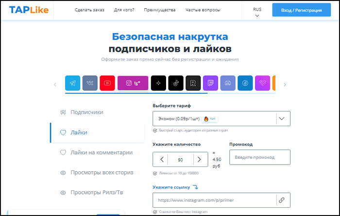
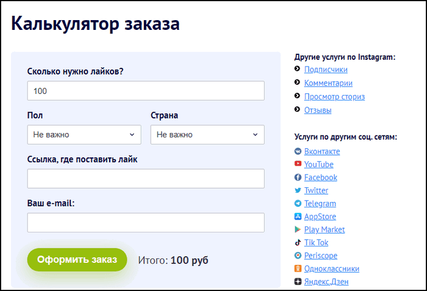
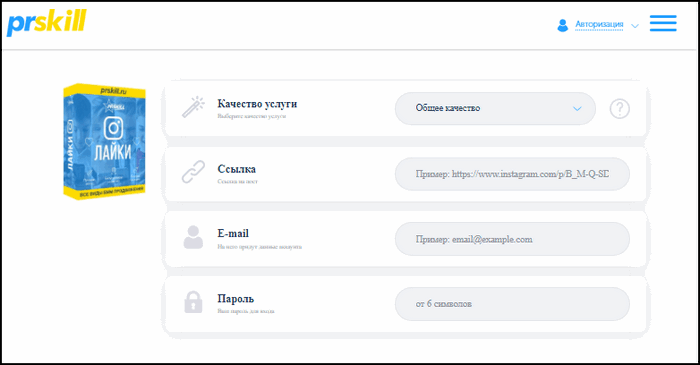
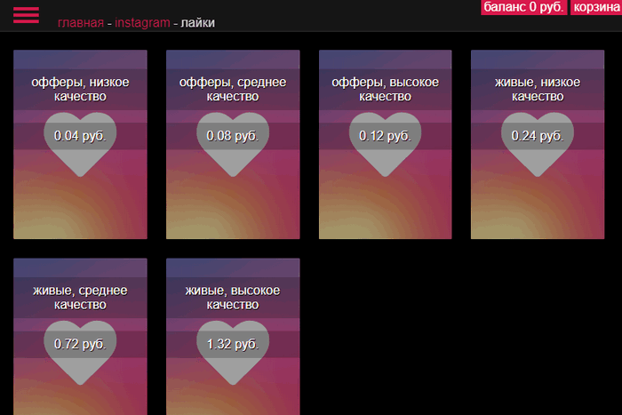
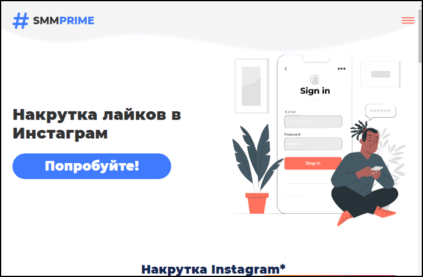
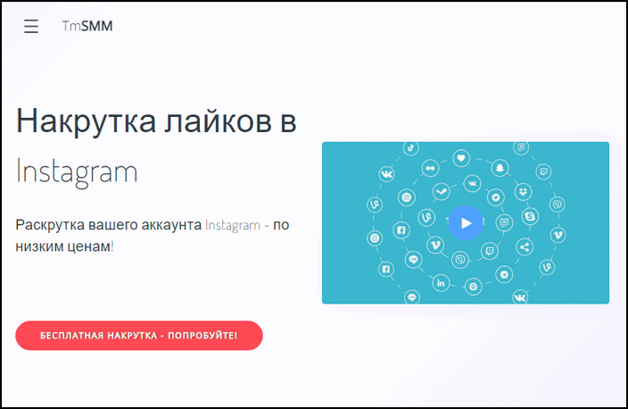
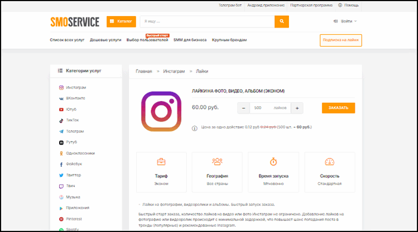
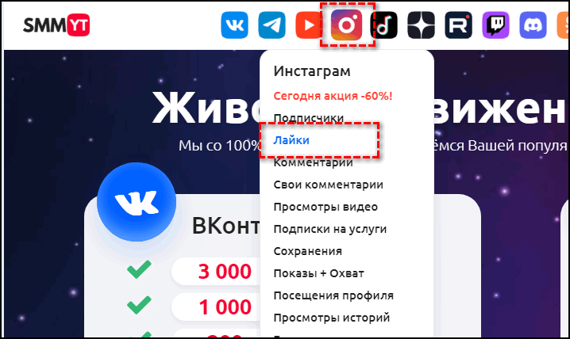
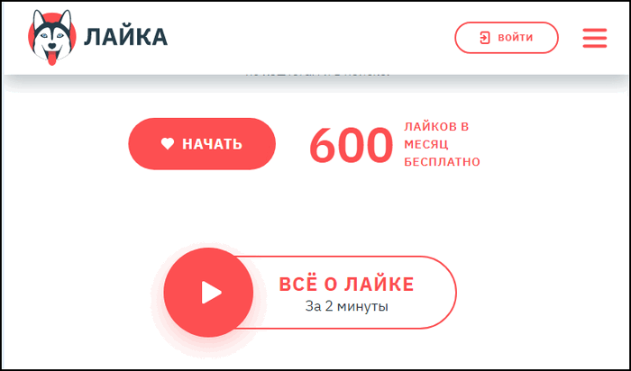
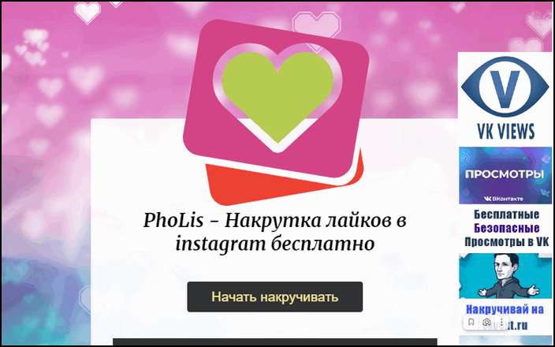

ТОП 25 способов накрутить лайки в Инстаграме бесплатно и платно

- На что влияют лайки в Инстаграме* и что даст накрутка
- ТОП-10 сервисов накрутки лайков в Инстаграм*
- №1 Smmplace.ru
- №2 SMM-bloger.ru
- №3 TapLike
- №4 UNU.im
- №5 PRSkill
- №6 MRPopular
- №7 SmmPrime
- №8 TmSMM
- №9 SMOService
- №10 SMMYT
- 5 Мобильных приложений и расширений в браузер
- 5 Телеграм-каналов и групп накрутки
- Лимиты лайков в 2023
- Могут ли заблокировать в Инстаграме* из-за лайков
Накрутка лайков в Инстаграм* бесплатно возможна через сторонние сервисы, группы по обмену лайками и мобильные приложения. Также есть платные варианты, где можно выбирать тип аудитории, возраст и геолокация.
На что влияют лайки в Инстаграме* и что даст накрутка
Отметки «Мне нравится» - первый индикатор активности, который появился в социальной сети. Его задача показать, какое число пользователей посмотрели публикацию и оценили её, как положительную или интересную им. Вместе с лайками накручивают и живых подписчиков, чтобы органично росла активность в профиле. С обновлениями у лайков появились дополнительные функции:
- отображаются в статистике, показывая количество пользователей, которые посещали аккаунт;
- один из способов, как узнать гостей профиля;
- продвигают в рекомендации.
Большое количество лайков – показатель, что пост интересен, поэтому алгоритмы социальной сети будут продвигать его в Рекомендации другим пользователям. На продвижение влияет тематика записи: участникам Инстаграма* посты предлагаются с учетом их предпочтений и предыдущих отметок «Мне нравится».
ТОП-10 сервисов накрутки лайков в Инстаграм*
Накрутка «живых» лайков в Инстаграме* – вариант, как поднять активность в профиле, найти свою аудиторию и развить страницу с минимальными вложениями.
Если не хотите тестировать площадки ниже, пробуйте - @V_TOP_soc_bot один из лучших сервисов и ботов накрутки лайков в Инстаграм*
№1 Smmplace.ru
Накрутка лайков в Инстаграм* бесплатно и быстро возможна через агрегатор сервисов, который представлен на мобильной и десктопной платформе. Для заказа можно воспользоваться системой выполнения заданий: заказчик также выполняет задания, ставя лайки другим пользователям. После, собрав нужно количество баллов, может ими оплатить заказ. Сервис предлагает до 4 тарифа, которые отличаются скоростью накрутки, ценой и максимальным количеством привлеченных.
№2 SMM-bloger.ru
В этом сервисе накрутка в Инстаграм* без регистрации возможна через «Быстрый старт». Это функция, которая позволяет добавлять ссылку и способы оплаты, не указывая свой адрес электронной почты. Автоматическая накрутка лайков начнется после того, как клиент укажет необходимое количество отметок «Мне нравится» и внесет оплату. Для «Быстрого старта» стоимость одного привлеченного – 0,31 рубль. Тип подписчиков – боты, после регистрации появится доступ к «живым» исполнителям и активной аудитории.
№3 TapLike

За 50 лайков в сервисе по тарифу: «Эконом» клиент отдаст 0,09 рублей за каждую отметку. Два других тарифа: «Премиум» и «Стандарт» по 0,29 и 0,19 соответственно. Тарифы отличаются максимальным количеством действий. Например, в «Эконом» можно получить до 150 000 отметок.№4 UNU.im

В сервисе можно накрутить лайки от 1 рубля за штуку. Даже в форме «Быстрого заказа» есть разделение по странам, половой принадлежности. Сервис выполнен, как биржа микрозадач, где можно заработать на выполнении других заказов и воспользоваться этими средствами для оплаты своих заданий.№5 PRSkill

В сервисе есть обычный заказ лайков и подписка на них – автолайки. Этот вариант предполагает, что заказчик будет регулярно пользоваться услугой и получать новые отметки: «Мне нравится» в заранее указанный срок. За 100 обычных лайков от ботов нужно заплатить 7,35 рублей. Клиент может выбрать тип аудитории, скорость гарантии. Но чтобы оформить заказ нужно пройти регистрацию, либо сервис создаст профиль автоматически при первой заявке.№6 MRPopular

Сервис предлагает 5 бесплатных лайков для первого заказа. По накрутке лайков предложено 6 разных пакетов услуг: от получения ботов за 0,04 до живых подписчиков премиального качества в 1,32 рубля. Чтобы оформить заказа нужно зарегистрироваться и добавить выбранный тариф в корзину.№7 SmmPrime

Чтобы получить лайки, нужно зарегистрироваться и перейти к соответствующей услуге. Сервис предлагает от 3 рублей за 1000 отметок от ботов. После создания учетной записи можно оформлять заявку на лайки от реальных пользователей и получить активную аудиторию.№8 TmSMM

Накрутка лайков в Инстаграм* по ссылке с помощью этого сервиса доступна в пробном периоде. При первом формировании заказа клиент может выбрать бонусную накрутку в 50 отметок «Мне нравится». Цены на услугу начинаются от 0,99 за 100 шт до 49 рублей за то же количество.№9 SMOService

Девять тарифов по накрутке лайков в Инстаграм*: от базового с ботами за 0,12 рублей за 1 лайк до 1,19 за живую и активную аудиторию. Для оформления заказа необязательно регистрироваться: в заявке указывают номер телефона и адрес электронной почты, а также ссылку на пост и желаемое количество подписчиков.№10 SMMYT

Более 17 тарифов, различные по скорости накрутки, странам, количеству, наличию гарантий и типу аудитории. Например, клиент из России может выбрать потенциальную аудиторию только из РФ. Или, если блог направлен на иностранных подписчиков, указать США или тариф «Ультима», где присутствуют разные участники. Цена базового тарифа, с накруткой ботов – 0,06 рублей и максимальный «Элит» по 500 рублей (от звезд, пользователей получивших верификацию).5 Мобильных приложений и расширений в браузер
#1 Laika.tools

Накрутка лайков в Инстаграм* через расширение в браузер возможно с помощью Laika.tools. Пользователю нужно установить утилиту в Google Chrome или Яндекс, после чего авторизоваться в своем профиле и сделать первое действие. Работает по принципу взаимных лайков: чтобы получить первые 50 лайков, нужно поставить столько же другим участникам. #2 PhoLis
Второй вариант, как купить лайки в Инстаграм* дешево – использовать еще одно расширение. Оно такое же по схеме действий: ставить отметки «Мне нравится» другим пользователям, чтобы получить активность. Для работы с расширениями нужно предварительно авторизоваться на сайте Инстаграма*. #3 Get Real Followers & Likes + (Android) Накрутка лайков на видео не менее популярная услуга. Мобильное приложение направлено не на саму накрутку лайков, а на привлечение активной аудитории с помощью хештегов. Пользователь запускает утилиту, выбирает список подходящих тегов, после чего получает новых подписчиков и отметки «Мне нравится». #4 Лайки и подписчики от хэштегов (AppStore) Накрутка лайков в Инстаграм* на айфон также возможна через хештеги. Это безопасный способ, как получить активность, не прибегая к автоматизированным способам. Как и в случае с предыдущим приложением: автор выбирает из перечня теги, которые соответствуют его публикациям и тематике блога. #5 Neutrino+ (Android, APK) Автоматическая накрутка лайков в Инстаграм* через Андроид возможна с помощью этого приложения. Но у него есть особенность: найти в Play Market оригинальную версию не получится. Зато она доступна на официальном сайте разработчика. Можно запустить накрутку лайков на фото и видео, а также Reels. Отдельно представлена услуга с ускорением: «Турбо-режим».5 Телеграм-каналов и групп накрутки
@inst8 (VK) В сообществе можно накрутить русских лайков от реальных пользователей. Есть два варианта, как продвигать аккаунт: воспользоваться платной услугой рекламы или добавить ссылку на страницу в комментарии к любой записи. @club196992331 (VK) В этой группе, чтобы получить подписчиков и лайки – нужно опубликовать адрес своего профиля на стене. Другие участники сообщества будут переходить в аккаунт и проявлять активность. Добавляя ссылку на страницу или публикацию, нужно указать какая активность необходима. @instagramv* (OK) Пользователь должен оставить ссылку на стене, чтобы по ней перешли другие и поставили отметки «Мне нравится». В дополнительной информации к посту можно оставить пожелания, как «оформить подписку» или «поставить лайк и комментарий». @likeforlikes_bot (TG) Бот, который поможет в заработке лайков на публикации. Пользователь указывает свой никнейм, чтобы стала возможна проверка его действий. После, с помощью системы взаимных отметок «Мне нравится» может плучать активность в профиль. @likesboom (TG) Чат активности, в котором может принять участие любой вступивший, добавив ссылку на свой аккаунт или публикацию. Накрутка лайков с защитой в этом случае неактуальна, зато прибывшая аудитория живая и активная. Нет системы взаимных отметок – участники реагируют на посты других по собственному желанию.
Лимиты лайков в 2023
Ежегодно лимиты на количество лайков в социальной сети меняются. Это связано в тем, что число ботов растет, а это высокий риск мошенничества, дополнительная нагрузка на сервера и неактивная аудитория. Поэтому, Инстаграм* установил лимиты, ограничивающие действия пользователей в разные периоды существования аккаунта. Лимиты 2023 на лайки в Инстаграме*:
- новый: 300 лайков в сутки;
- больше 3 месяцев: 600 в день;
- от года: 900.
Также есть ограничения по количеству действий в час: 25 для недавно зарегистрированного и 50 для всех остальных. Кроме лайков от реальных людей, нужно следить за другими активностями: комментариями, репостами, количеством публикаций. Если автор в течение суток опубликовал на новом аккаунте свыше 25 постов, то его профиль могут заблокировать. И количество «Мне нравится» на это не влияет.
Могут ли заблокировать в Инстаграме* из-за лайков
Социальная сеть может ограничить действия пользователя, если тот превысил лимиты. В Инстаграме* есть три типа блокировки: на сутки, временная (срок будет указан в появляющемся окошке) и навсегда. Владельцы блогов могут попасть в «теневой бан», если на их аккаунте были замечены автоматизированные действия. Особенности блокировки:
- поставил лайк и через пару секунд тот исчез. Значит страница временно ограничена в действии. На следующие сутки проблема исчезнет;
- появилась плашка: «Действие ограничено» и кнопка подтверждения. В этом случае нужно посмотреть, какой срок разблокировки указан;
- пользователь не может авторизоваться/страница не обновляется/выбросило на главную. Аккаунт заблокирован и восстановить поможет только служба поддержки.
Несмотря на то, что Инстаграм* запрещен и недоступен на территории РФ – профиль можно разблокировать через обращение в техническую поддержку. Для этого на главной нужно выбрать пункт: «Забыл пароль» и перейти к обращению. Выбирая в качестве способа продвижения автоматизированные сервисы, нужно установить лимиты или самостоятельно останавливать накрутку раз в час. Для новых аккаунтов промежуток чаще: раз в полчаса.